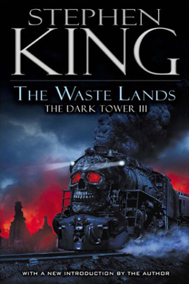

"The Waste Lands"
- Read on 2019-11-07
- Rating: ️️️️️
- Format: 🎧 (18 hours 14 minutes)
Easily the best installment of the series so far. The world that he's created is unique - both in interesting, and weird ways. The slightly twisted nature of some of his creations isn't entirely to my liking. That said, the characters and their plight is enjoyable. There's one particularly weird scene where sex is used as a weapon and a weakness... which is totally pointless and out of context for the style of the books. Fortunately, it's not highly graphic. Still, it could have been done in a variety of other ways.
- Prior: David Copperfield
- Next: The Girl with Seven Names